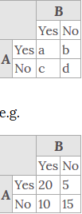
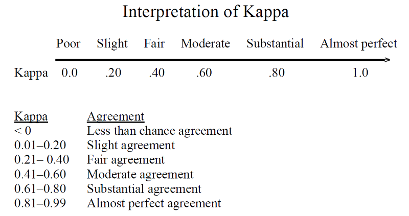
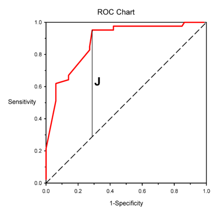

- Cohen's kappa
- Scott's pi
- Fleiss
- Youden's J statistic
- Informedness
Cohen's Kappa
Cohen's kappa coefficient (κ) is a statistic which measures inter-rater agreement for qualitative (categorical) items
- Compares an Observed Accuracy with an Expected Accuracy
- Very good measure that can handle very well both multi-class and imbalanced class problems.
- Evaluate a single classifier and evaluate classifiers amongst themselves
- $\kappa=\frac{p_o-p_e}{1-p_e}=1-\frac{1-p_o}{1-p_e}$
$p_o$ is the observed agreement
$p_e$ is the expected agreement
- For categories $k$, number of items $N$ and $n_{ki}$ the number of times rater $i$ predicted category $k$:
$p_e=\frac{1}{N^2}\sum_kn_{k1}n_{k2}$
Example

$p_o=\frac{a+d}{a+b+c+d}=\frac{20+15}{50}=0.7$
- the expected probability that both would say yes at random is:
$p_{Yes}=\frac{a+b}{a+b+c+d}\times\frac{a+c}{a+b+c+d}=0.5\times0.6=0.3$
- Similarly, say no at random is:
$p_{No}=\frac{c+d}{a+b+c+d}\times\frac{b+d}{a+b+c+d}=0.5\times0.4=0.2$
- Overall random agreement probability:
$p_e=p_{Yes}+p_{No}=0.3+0.2=0.5$
- So, Cohens' kappa $\kappa=\frac{p_o-p_e}{1-p_e}=\frac{0.7-0.5}{1-0.5}=0.4$
Interpretation of Cohens' Kappa

Weighted Kappa
$$\kappa=1-\frac{\sum_{i=1}^k\sum_{j=1}^kw_{ij}x_{ij}}{\sum_{i=1}^k\sum_{j=1}^kw_{ij}m_{ij}}$$
Fleiss and Scott's pi
Fleiss's Kappa
Extends Cohen’s Kappa to more than 2 raters
Scott's pi
Similar as Cohen's Kappa, but $p_e$ is calculated using squared "joint proportions" which are squared arithmetic means of the marginal proportions (whereas Cohen's uses squared geometric means of them)
Youden's J statistic
- $J=sensitivity+specificity-1$
- $J=\frac{TP}{TP+FN}+\frac{TN}{TN+FP}-1$
Informedness is its generalization to the multiclass case and estimates the probability of an informed decision

Machine Learning
Applications and practices